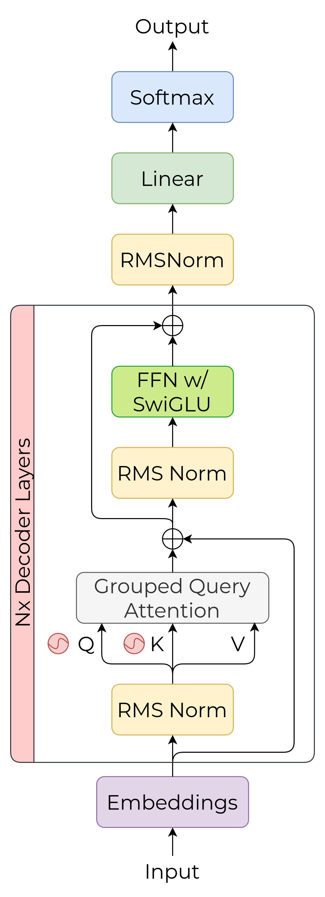
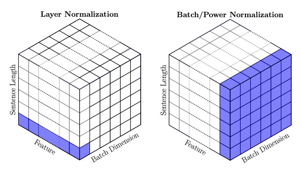
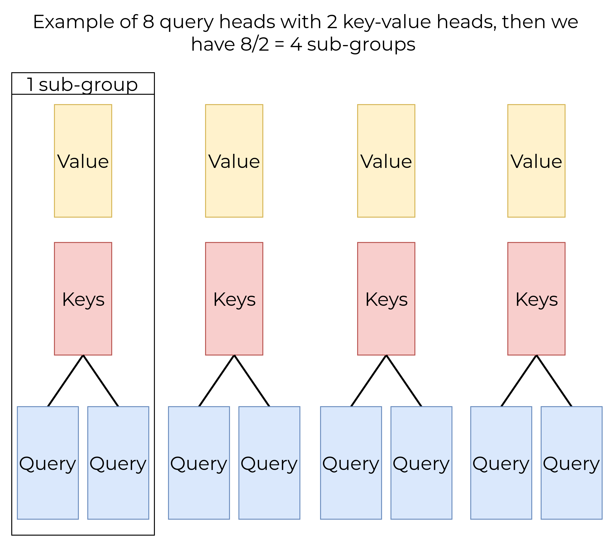
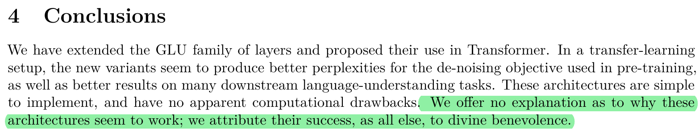

LLAMA-2¶
Paper PDF : https://arxiv.org/pdf/2307.09288
Llama 2 is a decoder-only transformer model from Meta.

Rotary Positional Embeddings (RoPE)¶
The Self-Attention mechanism is inherently agnostic to the order of tokens in a sequence. So, Vaswani et.al used Absolute Positional Embeddings using a sinusoidal function or a learnable parameter. The disadvantage is that it doesn't capture relative positional information (e.g., the distance between two tokens). In natural language, the meaning of words often depends on their relative positions. For example, the first word in a sentence can relate to the last word.
Absolute Positional Embedding using a learnable parameter also cannot capture position information if input sequences are larger than max training sequences, leading to poor predictions if using sinusoidal, as referred to in ALiBi.
To tackle that problem, Shawn et. al proposed modifying the self-attention formula to capture relative positions by adding relative position information to key and value tensors as learnable parameters. The disadvantages are inefficient complexity, where larger sequence lengths require more time for training and inference, and it cannot be applied with KV Cache because every time a new token is added, it must recalculate the relative positional embedding.
Then in 2023, Su et. al proposed RoPE, which captures both absolute and relative information. It involves a rotation matrix—similar to SO(2) for 2D—and is applied only to queries \(W_q\) and keys \(W_k\) weights. In 2D vector embeddings, it can be computed as follows:
The first right-hand term defines the absolute position with \(m\) as the index of the token or word, and the last term is the vector to be rotated. For D-dimensions > 2, it scales up the 2D rotation matrix
with \(R_{\Theta,m}^{d}\),
In the RoPE paper, they define \(\Theta = \{ \theta_i = 10000^{-2(i-1)/d}, \, i \in [1, 2, \dots, d/2] \}\). Then,
Now, we can see from the equation above that it handles relative position, shown by \((R^d_{\Theta,m})^TR^d_{\Theta,n}\), called the relative rotation matrix.
Root Mean Square Normalization (RMS Norm)¶
The Vanilla Transformers Model (Encoder-Decoder) uses Layer Norm for normalization. LayerNorm normalizes the activations across the features dimension for each individual input (instead of across the batch, as in BatchNorm). We use normalization because we don’t want our network learning in one direction due to large gradients between layers.

LayerNorm takes the means and variances of each individual input, re-centering and re-scaling the input. LayerNorm can be determined by:
Where \(x\) is the input, \(\mu\) and \(Var[x]\) are the mean and variance of x across the features dimension, and \(\gamma\) and \(\beta\) are learnable params that tune the effect of re-scaling and re-centering invariance.
Root Mean Square Normalization (RMSNorm) is a simplified version of LayerNorm. The authors of the RMSNorm paper by B. Zhang (2019) hypothesized that the re-centering part of LayerNorm doesn't contribute significantly during training. Therefore, the network can be more efficient since we don’t need to calculate the mean. Root Mean Square is a statistical function that doesn't require the mean.
Grouped Query Attention (GQA)¶
Grouped Query Attention is an interpolation between Multi Query Attention and Multi-Head Attention. GQA uses one head of keys and values for each sub-group. The number of groups in GQA can be determined by:
Multi-Head Attention (MHA) slows during inference due to the large memory bandwidth cost when loading keys and values N. Shazeer (2019). As explained by Umar Jamil, GPU calculations are faster than memory bandwidth (the speed at which the GPU can access data in VRAM). It’s better to (1) perform the same operations on the same tensor N times than (2) perform the same operations on different tensors N times because, in case (1), the tensor is only traveled once. This is the rationale behind Multi-Query Attention (MQA); MQA uses one set of keys and values shared across all queries, requiring less KV cache than MHA and speeding up decoder inference. J. Ainslie (2023) stated that MQA can lead to quality degradation and training instability, so they proposed Grouped Query Attention (GQA), which balances quality and speed during training and inference.

In the graphic above, when KV heads = 1 (\(n_{groups} = n_{Q heads}\)), it’s more like MHA, and when KV heads = Q heads (\(n_{groups} = 1\)), it’s more like MQA.
KV Cache¶
Basic decoder-only inference computes the dot product of key and value tensors for all tokens with quadratic time complexity, making the model slow during inference. KV cache is a mechanism that stores keys and values tensors of processed previous tokens in VRAM, so we only compute current queries to cached keys and values tensor.

As you can see, KV-Cache only works with the last query and doesn't involve the previous query, making the dot product calculation more efficient (note that its dimension is mostly 1).
SwiGLU Activation Function¶
SwiGLU is an extension of the Swish activation function with \(\beta = 1\), also known as SiLU (Sigmoid Linear Unit), and combines elements from the GLU (Gated Linear Unit) activation function. Based on the SwiGLU paper by Shazeer, this activation function outperforms other activation functions like GLU, Bilinear, GeGLU, and ReGLU.
The SiLU function, also referred to as Swish, can be defined as:
GLU, on the other hand, is a neural network layer that performs a component-wise product of two linear transformations of the input, with one transformation applied with a Sigmoid function:
For a feed-forward network (FFN) layer with GLU, we have:
To use SwiGLU in an FFN layer, simply replace the Sigmoid function \(\sigma\) in FFNGLU with SiLU:
In the paper, the authors reduce the second dimension of matrices \(\bf{W}\) and \(\bf{V}\), as well as the first dimension of \(\bf{W_2}\), by a factor of \(\frac{2}{3}\) to maintain constant computational cost.
However, the exact reason why SwiGLU outperforms other activation functions is not explicitly defined in the paper.

Appendix¶
RMSNorm Code¶
class RMSNorm(nn.Module):
def __init__(self, config):
super(RMSNorm, self).__init__()
self.eps = config.rms_norm_eps
self.weight = nn.Parameter(torch.ones(config.embedding_size))
def forward(self, x: torch.Tensor):
denom = torch.sqrt(x.pow(2).mean(-1, keepdim=True) + self.eps)
return ((self.weight * x) / denom).type_as(x)
RoPE¶
class RoPE(nn.Module):
def __init__(self, head_dim:int, config):
super(RoPE, self).__init__()
assert head_dim % 2 == 0, "Dimension must be even (divisible by 2)"
theta = 1 / config.rope_theta ** (torch.arange(0, head_dim, 2).float() / head_dim)
self.register_buffer("theta", theta)
@torch.no_grad()
def forward(self, x: torch.Tensor):
device = x.device
self.theta = self.theta.to(device)
m = torch.arange(x.size(1), device=device)
frequencies = torch.outer(m, self.theta)
frq_complex = torch.exp(1j * frequencies)
x_complex = torch.view_as_complex(x.reshape(*x.shape[:-1], -1, 2))
freq = frq_complex.unsqueeze(0).unsqueeze(2)
x_rotated = x_complex * freq
x_rope = torch.stack((x_rotated.real, x_rotated.imag), dim=-1)
x_rope = torch.flatten(x_rope, start_dim=-2)
return x_rope.type_as(x)
Scaled-dot Product¶
def ScaledDotProduct(Q: torch.Tensor, K: torch.Tensor, V: torch.Tensor, mask: torch.Tensor = None):
scores = torch.matmul(Q, K.transpose(-2, -1)) / (Q.size(-1) ** 0.5)
if mask is not None:
mask = mask.unsqueeze(1)
scores = scores.masked_fill(mask == 0, -torch.inf)
scores = F.softmax(scores, dim=-1)
scores = torch.matmul(scores, V)
return scores
Grouped Query Attention¶
class GroupedQuery(nn.Module):
def __init__(self, config):
super(GroupedQuery, self).__init__()
assert config.n_q_heads % config.n_kv_heads == 0, (
f"{RED}Query heads ({config.n_q_heads}) is not divisible by key and value heads ({config.n_kv_heads}), "
f"which will result in a non-integer number of groups. {END}"
)
self.n_q_heads = config.n_q_heads
self.n_kv_heads = config.n_kv_heads
self.n_groups = config.n_q_heads // config.n_kv_heads
self.head_dim = config.embedding_size // self.n_q_heads
self.q_proj = nn.Linear(config.embedding_size, self.n_q_heads * self.head_dim, bias=config.bias)
self.k_proj = nn.Linear(config.embedding_size, self.n_kv_heads * self.head_dim, bias=config.bias)
self.v_proj = nn.Linear(config.embedding_size, self.n_kv_heads * self.head_dim, bias=config.bias)
self.out_proj = nn.Linear(self.head_dim* self.n_q_heads, config.embedding_size, bias=config.bias_out)
self.cache_k = torch.zeros(config.max_batch, config.max_seq_len, self.n_kv_heads, self.head_dim)
self.cache_v = torch.zeros(config.max_batch, config.max_seq_len, self.n_kv_heads, self.head_dim)
self.rope = RoPE(self.head_dim, config)
def forward(self, x: torch.Tensor, mask: torch.Tensor = None, start_pos:int = 0, use_rope:bool=True,):
batch, seq_len, _ = x.size()
K = self.k_proj(x).view(batch, seq_len, self.n_kv_heads, self.head_dim).transpose(1,2)
V = self.v_proj(x).view(batch, seq_len, self.n_kv_heads, self.head_dim).transpose(1,2)
Q = self.q_proj(x).view(batch, seq_len, self.n_q_heads, self.head_dim).transpose(1,2)
if use_rope:
K = self.rope(K)
Q = self.rope(Q)
if use_cache and start_pos is not None:
self.cache_k[:batch, start_pos:start_pos+seq_len] = K
self.cache_v[:batch, start_pos:start_pos+seq_len] = Q
K = self.cache_k[:batch_size, 0:start_pos+seq_len]
V = self.cache_v[:batch_size, 0:start_pos+seq_len]
K = torch.repeat_interleave(K, self.n_groups, dim=1)
V = torch.repeat_interleave(V, self.n_groups, dim=1)
attn = ScaledDotProduct(Q, K, V, mask).transpose(1,2)
output = attn.contiguous().view(batch, seq_len, -1)
return self.out_proj(output)
SwiGLU¶
class SwiGLU(nn.Module):
def __init__(self, config):
super(SwiGLU, self).__init__()
def sigmoid(self, x: torch.Tensor):
return 1 / (1 + torch.exp(-x * 1))
def forward(self, x: torch.Tensor):
return x * self.sigmoid(x)
Feed Forward¶
class FeedForward(nn.Module):
def __init__(self, config):
super(FeedForward, self).__init__()
self.fc1 = nn.Linear(config.embedding_size, config.intermediate_dim, bias=config.bias_out)
self.fc2 = nn.Linear(config.embedding_size, config.intermediate_dim, bias=config.bias_out)
self.fc3 = nn.Linear(config.intermediate_dim, config.embedding_size, bias=config.bias_out)
self.silu = nn.SiLU()
def forward(self, x: torch.Tensor):
x1 = self.silu(self.fc1(x))
x2 = self.fc2(x)
x = x1 * x2
return self.fc3(x)
Decoder¶
class Decoder(nn.Module):
def __init__(self, config):
super(Decoder, self).__init__()
self.RMSNorm = RMSNorm(config)
self.GQA = GroupedQuery(config)
self.FFN = FeedForward(config)
def forward(self, x: torch.Tensor, mask: torch.Tensor, pos_emb:bool = True):
x1 = x
x = self.RMSNorm(x)
x = self.GQA(x, mask, pos_emb)
x2 = x1 + x
x = self.RMSNorm(x2)
x = self.FFN(x)
return x2 + x
LLAMA-2¶
class Model(nn.Module):
def __init__(self, config):
super(Model, self).__init__()
self.token_embedding = nn.Embedding(config.vocab_size, config.embedding_size)
self.layers = nn.ModuleList([
Decoder(config) for _ in range(config.n_layers)
])
self.RMSNorm = RMSNorm(config)
self.fc_out = nn.Linear(config.embedding_size, config.vocab_size, bias=config.bias_out)
def forward(self, tokens, mask: torch.Tensor = None):
x = self.token_embedding(tokens)
for layer in self.layers:
x = layer(x, mask, False)
x = self.RMSNorm(x)
return self.fc_out(x)